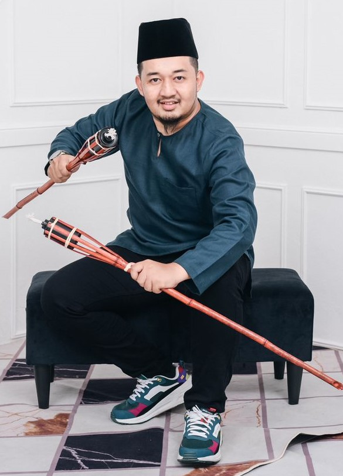

Welcome To My Website
My Profile
My nam is muhammad fahmi bin che ab wahab.I am a part-time student at UTMSPACE, enrolled in a Bachelor's degree program in Computer Science with a focus on Software Engineering. UTMSPACE has provided me with the flexibility to balance my studies with other commitments. The program has equipped me with a solid foundation in programming languages, algorithms, data structures, and software development methodologies. I have enjoyed collaborating with fellow part-time students, and UTMSPACE's resources and support services have been instrumental in my success. Being a part-time student has taught me valuable skills such as time management and self-discipline. Overall, my experience at UTMSPACE has been rewarding, and I look forward to contributing to the software engineering field in the future.
Skills
- HTML
- CSS
- JavaScript
-
MRTE(M) SDN BHD
IT ENGINEER ASSISTANT
Driven IT engineer assistant with hands-on experience at MRTE(M) SDN BHD. Proven ability to provide technical support, troubleshoot issues, and assist in the implementation of IT solutions. Proficient in hardware and software installation, configuration, and maintenance. Skilled in network administration, ensuring smooth operations and optimal performance. Strong knowledge of operating systems, servers, and security protocols. Collaborative team player with excellent communication and problem-solving skills. Committed to delivering exceptional customer service and contributing to the overall success of the organization
-
MRTE(M) SDN BHD
SITE SUPERVISOR
Dedicated and proactive site supervisor with a successful track record at MRTE(M) SDN BHD. Demonstrated expertise in overseeing and managing construction sites to ensure project completion within specified timelines and budget constraints. Adept at coordinating and supervising site activities, including material management, resource allocation, and workforce coordination. Skilled in interpreting blueprints, ensuring adherence to safety regulations, and maintaining quality standards. Excellent communication skills, enabling effective collaboration with clients, contractors, and team members. Detail-oriented and quality-focused, committed to delivering exceptional results and exceeding client expectations. Strong leadership abilities and problem-solving skills contribute to successful project outcomes.